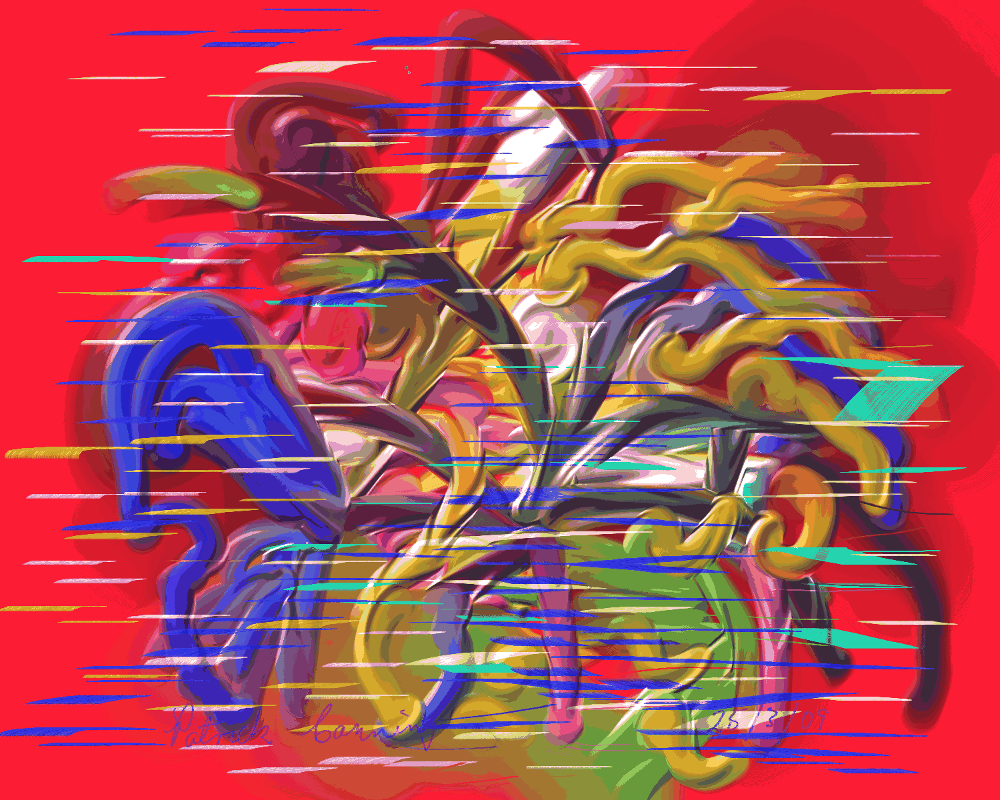
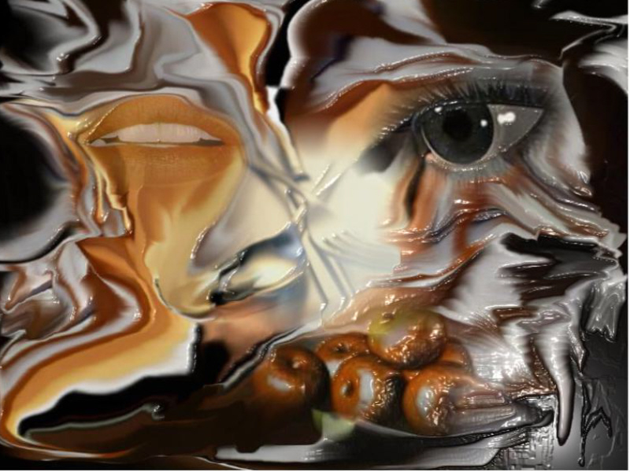
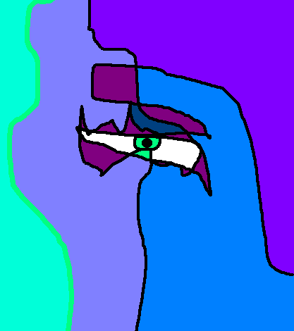

Click image to view artist's full exhibit
Fleuvesenna
by Magdelina Campomenosi
04/11/2022

Blobby1 
by Patrick Canning
04/12/2022
Starlight Staccato
by Victor Cinquino
04/13/2022

The Pragmatics
by Carol Cooper
04/14/2022

Images of the Subconscious
by Vincenzo Corrado
04/15/2022

Lies
by Christel Dall
04/16/2022

Abstract 
by Maria Datzreiter
04/17/2022
Beautiful Mermaid 
by Kim DeLeary
04/18/2022
Flowers Love Sunrise
by Nelson de Paula
04/19/2022

Study Series
by Martin Dingli
04/20/2022